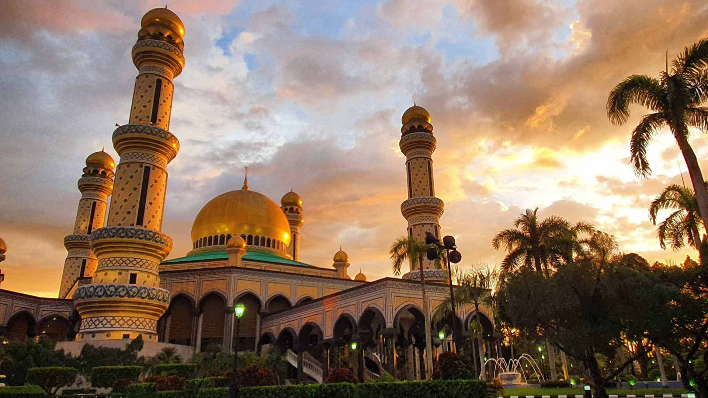
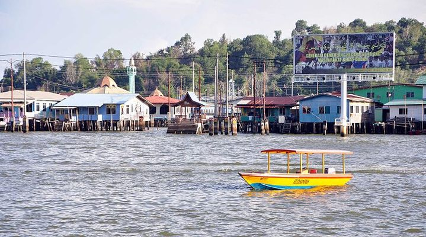
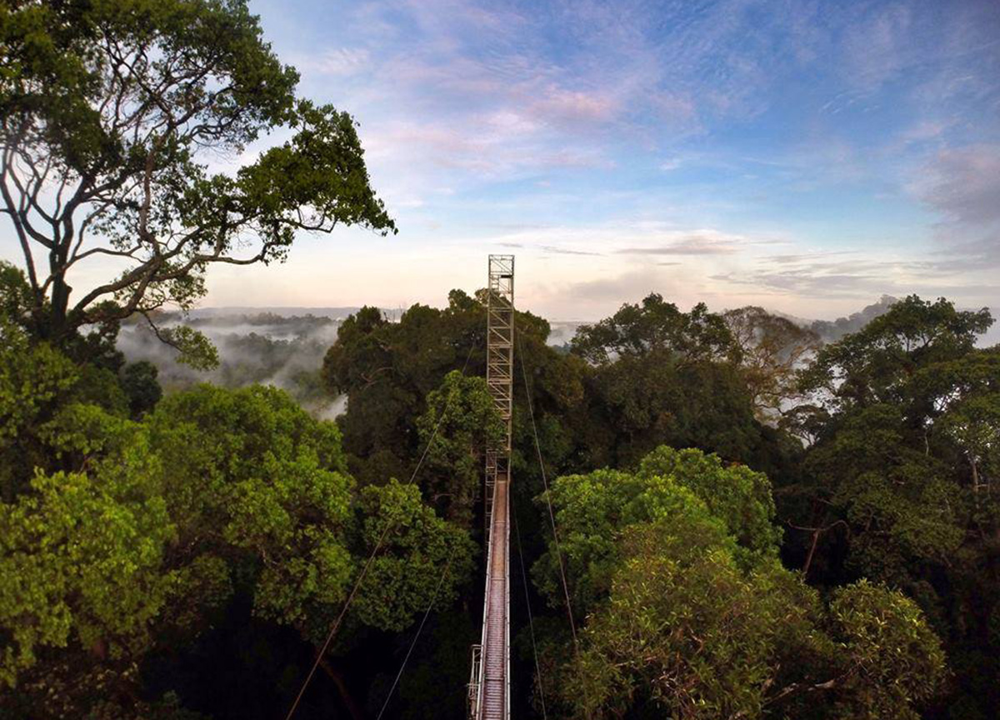
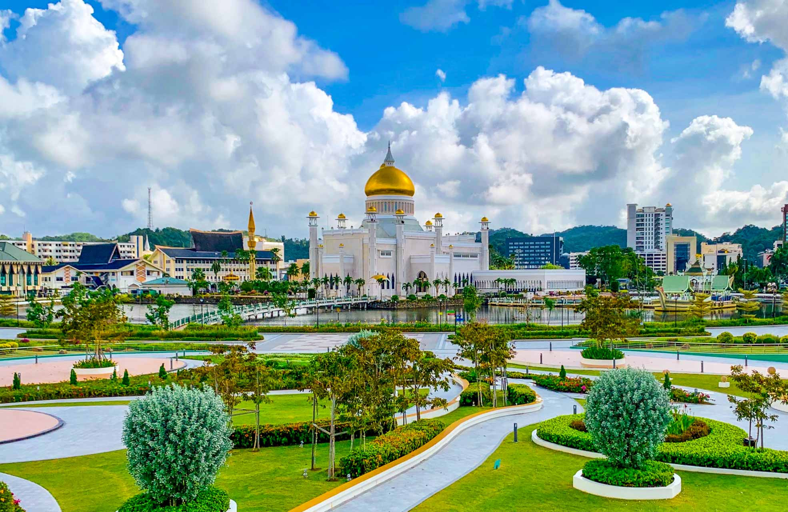
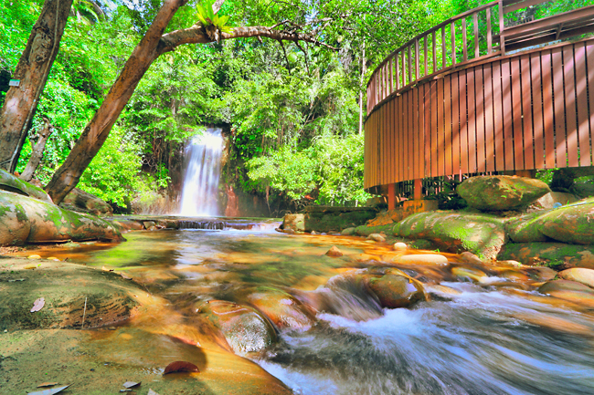

Jame' Asr Hassanil Bolkiah Mosque
Located in Bandar Seri Begawan. It is the largest mosque in Brunei. The mosque features 29 golden domes, surrounded by beautiful landscaped gardens and fountains.
Come And Experience Why Brunei Is Called The "Abode of Peace".

Located in Bandar Seri Begawan. It is the largest mosque in Brunei. The mosque features 29 golden domes, surrounded by beautiful landscaped gardens and fountains.

A village that was built on water where it is home to all classes of citizens in Brunei. Visitors will go and use a water taxi to go across with a payment of $1.

Located in the easternmost of Brunei called Temburong. This is the first national park that was protected since 1991.

Located in Bandar Seri Begawan. It has a gold dome that dominates the city's skyline. Interior is decorated with rugs from Saudi Arabia and walls made from Italian marble.

An urban park also located at Bandar Seri Begawan. The key features and attractions here is the waterfall and lake.